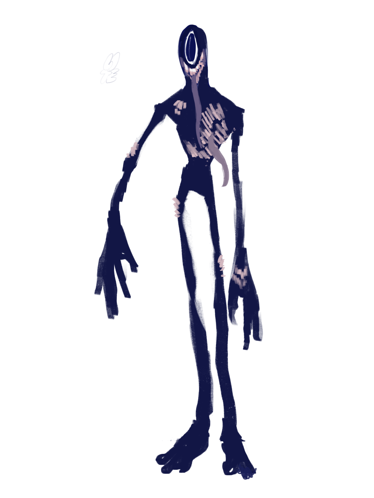

My art story began back when I was in 2nd grade. I started drawing because, well, it was fun! But things got more interesting when I discovered something called FNAF animatics. They're like cool animations, and they inspired me to take art more seriously. At first, I drew pictures of characters from "Five Nights at Freddy's" (FNAF) and "My Little Pony" (MLP). It was like saying, "Hey, I love these characters!" As time went on, I didn't just copy stuff; I started creating my own art, making things up from my imagination. Then, when I was in middle school, something awesome happened—I won an award for my art! It was a big deal in my school district, and it felt super cool to get a ribbon for something I loved doing. But, things took a turn when I got to high school.
I thought I wanted to be a vet, so I put art on the back burner for a bit. It seemed like the logical thing to do. In my sophomore year, I took this art and tech class, and I met an amazing teacher who changed everything. She helped me realize that art was my true passion. I didn't want to give up something I'd been doing for seven years just because someone else thought I should do something else. So, in my junior year, I decided to stick with art. Now, I pretty much draw something every day. I use my iPad and an app called Procreate to create digital art, but sometimes I still draw with pencils and paper. Art is more than just a hobby for me; it's something I'm really passionate about. It's how I express myself and tell stories without words. And I plan to keep practicing and getting better because there's so much more to explore in the world of art.
